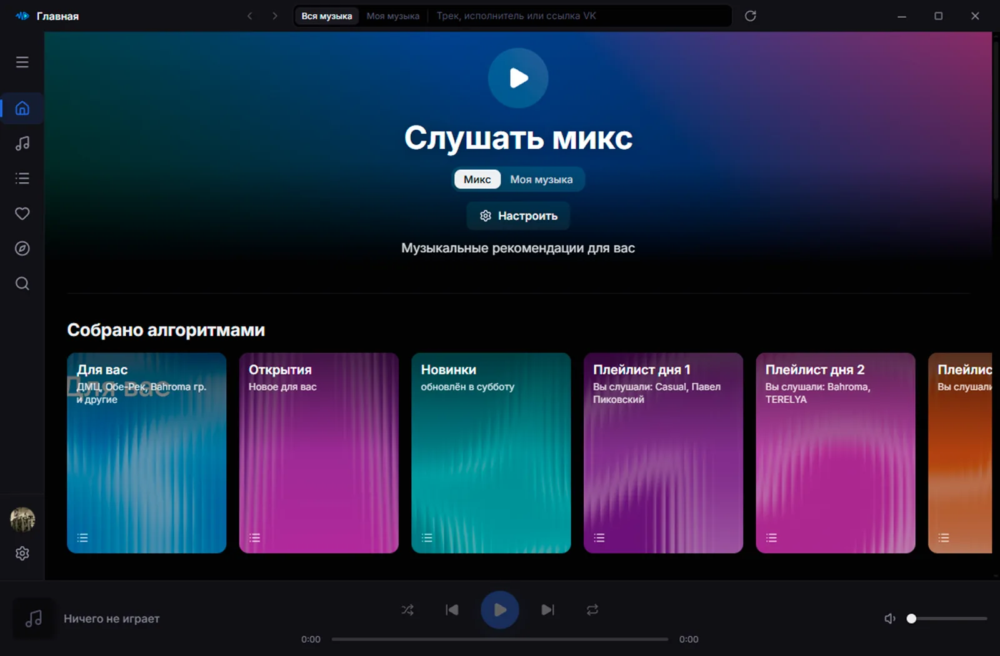
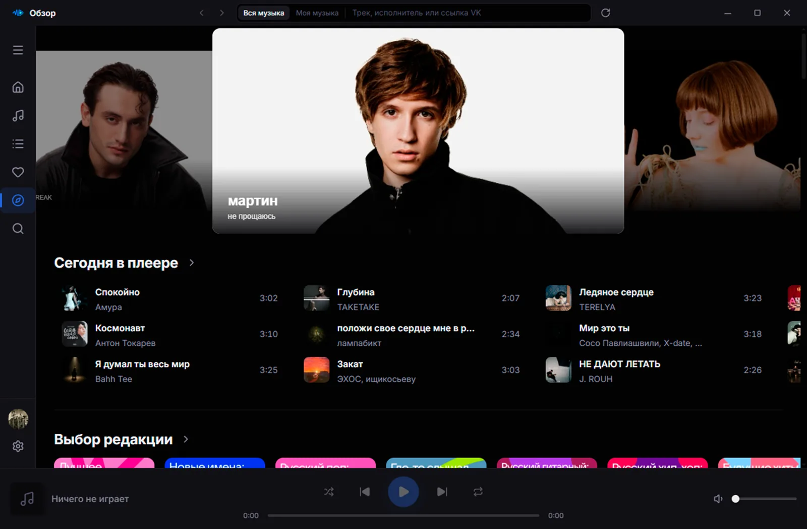
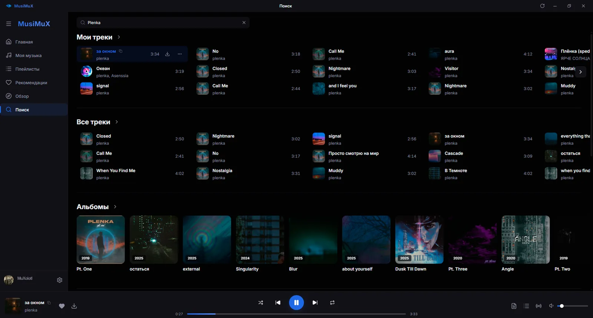
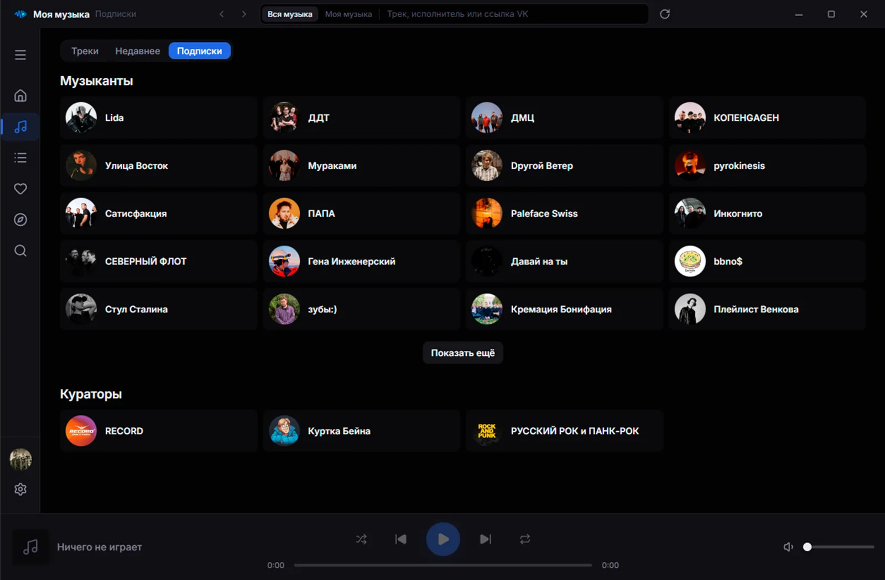
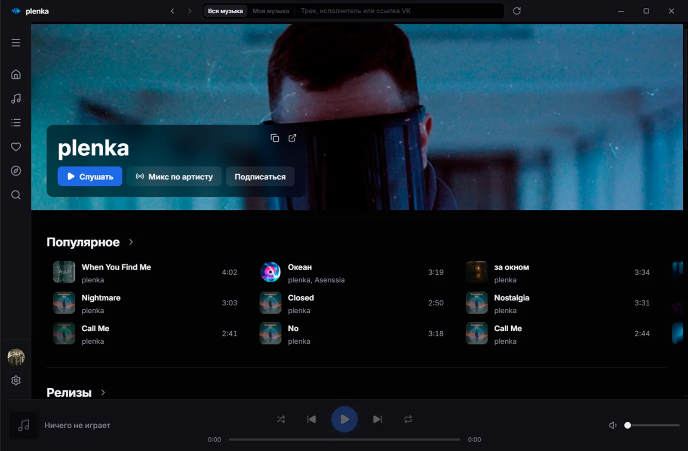
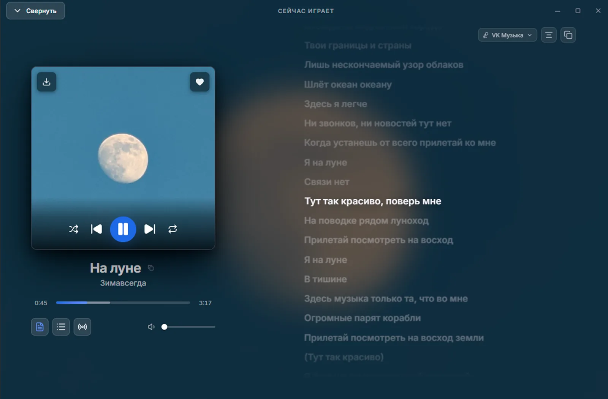

Слушайте свою музыку в отдельном окне
MusiMuX — плеер VK Музыки для Windows, macOS и Linux. Ваши треки, плейлисты и подборки — не во вкладке браузера, а в обычном окне: с медиа-клавишами, треем, текстами песен и скачиванием в MP3.
Узнать большеКак выглядит MusiMuX






Главная. Микс под ваш вкус, подборки от алгоритмов и жанры.
Обзор. Баннеры, «Сегодня в плеере» и подборки редакции.
Поиск. Поле в шапке видно из любого раздела: «Вся музыка» ищет по всему каталогу, «Моя музыка» — только по добавленным трекам.
Подписки. Музыканты и кураторы, на которых вы подписаны, с переходом на их страницы.
Артист. Популярное, релизы, «Микс по артисту», подписка и ссылка на страницу в VK.
Сейчас играет. Крупная обложка и текст песни: источник можно выбрать, строки подсвечиваются по ходу трека.
Что умеет MusiMuX
Коротко о главном. Полный список — на странице «О проекте».
Моя музыка и плейлисты
Треки и плейлисты с обложками и фильтром «Все», «Мои», «Добавленные». Рядом — вкладки «Недавнее» (что слушали) и «Подписки» (исполнители и кураторы, на которых вы подписаны).
Главная, Обзор и Рекомендации
Подборки, миксы с отметкой «Не нравится», новинки и чарты, кураторы и жанры. То же, что в мобильном приложении, только на большом экране и с мышью.
Поиск
Одно поле в шапке — доступно из любого раздела. Слева выбирается область: «Вся музыка» ищет треки, альбомы, плейлисты, исполнителей и кураторов, «Моя музыка» — только добавленные треки. Подсказки появляются по мере ввода, история запросов хранится локально отдельно для каждого аккаунта — её можно отключить или очистить.
Ссылки VK
Ссылка, вставленная в поиск, открывает то, на что она указывает: трек, плейлист, альбом, исполнителя, куратора или раздел. Ссылка на трек открывает окно трека — обложка включает воспроизведение, рядом «В мою музыку», «Микс по треку», «Открыть альбом», «В плейлист» и переход на страницу трека в VK, ниже — похожие треки.
Текст песни
Текст ищется сразу в десяти источниках: варианты появляются по мере ответа, синхронизированный выбирается сам, а меню у текста показывает, откуда он и какие ещё есть. Строки с таймкодами подсвечиваются по ходу песни и продолжают следовать за ней после ручной прокрутки; клик по строке перематывает трек, текст выравнивается по центру или слева и копируется целиком. Есть экран «Сейчас играет» на всё окно.
Скачивание и загрузка
Треки, плейлисты и альбомы скачиваются в MP3 — с названием, исполнителем и обложкой в тегах файла. Свои MP3 до 200 МБ можно наоборот загрузить в «Мою музыку»: названия и исполнители правятся прямо в очереди до отправки.
Звук
Эквалайзер на десять полос: встроенные и свои пресеты, импорт и экспорт в файл. И кроссфейд — следующий трек плавно перекрывает предыдущий.
Мини-плеер и трей
Приложение может жить в трее, а рядом — мини-плеер для паузы и переключений. На Windows трек виден в медиапанели и в миниатюре на панели задач, а в микшере громкости плеер отображается со своим именем и значком.
Клавиши и мышь
Пробел — пауза, Escape — назад, F5 — обновить раздел, колесо мыши над громкостью — плавная регулировка, клик по динамику — без звука. Работают медиа-клавиши, свои глобальные сочетания и боковые кнопки мыши.
Несколько аккаунтов
Если у вас не один аккаунт, между ними можно переключаться без перезапуска и повторного ввода пароля — из меню у аватарки или из настроек.
Меню трека
Правый клик: слушать следующей, добавить в конец очереди, похожие треки, плейлисты, «Моя музыка», скачивание и ссылка на трек. В шапке меню — обложка и альбом, по нему открывается его страница. Если трек недоступен, приложение покажет причину, которую сообщает VK.
Без своих серверов
У проекта нет сервера, через который проходили бы ваши запросы и данные. Приложение на вашем компьютере обращается к VK само — от вашего имени и напрямую.
Запросы идут напрямую
Вход, каталог и сама музыка — между вашим компьютером и VK. Тексты песен, которых нет у VK, приложение ищет в открытых каталогах текстов: туда уходят только исполнитель и название трека — без аккаунта, токена и истории. Посередине никого нет, собирать и продавать просто некому и нечего.
Данные лежат у вас
Токены аккаунтов, настройки, кеш обложек и скачанные MP3 хранятся на вашем компьютере — и больше нигде.
Что сохранять и отправлять — настраивается
Трансляция текущего трека в статус по умолчанию выключена, а отправку истории прослушивания в VK и локальную историю поисковых запросов можно отключить в любой момент.
Бесплатно и без рекламы
Со стороны приложения нет ни тарифов, ни баннеров. MusiMuX не добавляет ограничений сверх тех, что уже есть у вашего аккаунта.
На чём написано
Rust, Tauri и Svelte. Поэтому это обычное небольшое окно вашей системы, а не ещё одна копия браузера в рамке.
Rust
Ядро API
Своё ядро: вход и запросы к VK без готовых SDK
Tauri 2
Оболочка
Окно · трей · мини-плеер · обновления
Svelte 5
Интерфейс
Runes · TypeScript · Vite
Вопросы, которые задают чаще всего
Нужен ли аккаунт, чтобы слушать?
Да. MusiMuX — клиент VK Музыки: вход по логину и паролю (код подтверждения придёт тем способом, который разрешён для вашего аккаунта) или по готовому токену. Без аккаунта слушать нечего — своих треков у приложения нет.
Куда уходят мой пароль и токен?
Никуда, кроме самого VK при входе. У MusiMuX нет своих серверов: токен, который VK выдаёт после входа, хранится в файле на вашем компьютере рядом с остальными настройками.
Почему при первом запуске система предупреждает о приложении?
Сборки не подписаны платным сертификатом разработчика, поэтому Windows SmartScreen и macOS Gatekeeper просят подтвердить первый запуск вручную. На странице «Скачать» написано, как это сделать.
Не получается войти. Что проверить?
Сначала — VPN и прокси: с включённым VPN вход чаще всего и не проходит, приложение с версии 0.13 прямо об этом предупреждает. Выключите VPN и попробуйте снова. Если не помогло — заведите Issue на GitHub и приложите текст ошибки (без паролей и токенов).
Можно слушать без интернета?
Нет, для входа и музыки нужен доступ к VK — офлайн-плеером для локальных файлов MusiMuX не является. А вот скачанные через него MP3 — обычные файлы на вашем диске, их можно слушать чем угодно и без сети.
Как приложение обновляется?
Новые версии лежат на GitHub Releases. MusiMuX может просто уведомлять о них, ставить сам или не проверять вовсе — режим выбирается в настройках.
Нашли баг или есть идея?
Расскажите. Ошибки удобнее всего разбирать в Issues, идеи и вопросы — в Discussions, а просто поговорить и следить за новостями можно в Telegram.
Новости проекта, заметки о новых версиях и обсуждения в @MusiMuX.
Открыть → Написать авторуСвязаться напрямую в Telegram (@Politrees2).
Написать → IssuesСообщить об ошибке или посмотреть, что уже известно.
Открыть → DiscussionsПредложить функцию, задать вопрос, обсудить, как сделать лучше.
Открыть →